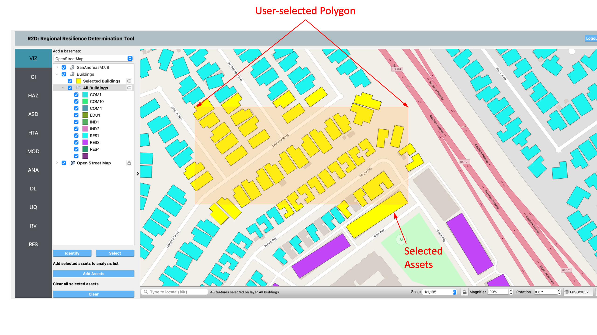
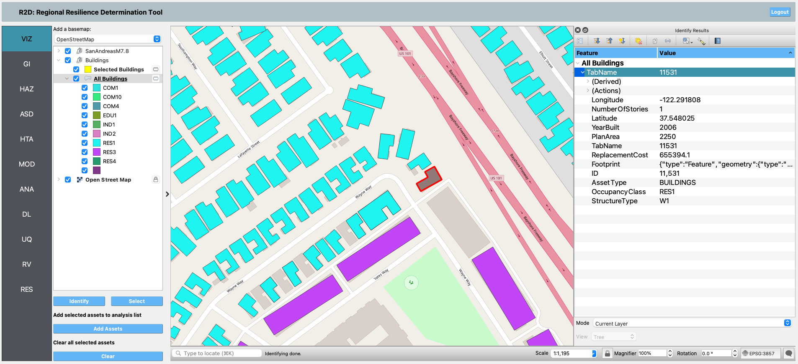

2.1. VIZ: Visualization¶
This section details the Visualization panel as depicted in Fig. 2.1.1, enabling users to visualize assets and hazards on a geographical map.
Fig. 2.1.1 Geographic visualization panel.¶
Geographic Visualization (GIS) Pane: This pane integrates the QGIS system, offering a comprehensive suite of geospatial tools within R2D. Users can visualize a map of a region along with assets and hazards. For an in-depth exploration of QGIS features, refer to the QGIS documentation. Access the GIS functionality in R2D via the GIS Map menu.
Base Map Selection: Choose a base map from the dropdown to display in the GIS pane’s background.
Map Layer Tree: Manage map layers here. Check a layer’s box to toggle visibility or right-click for options like Zoom to Layer and Show Feature Count. Layers can be reordered through drag-and-drop; layers positioned lower are rendered beneath those above them.
Asset Subset Selection: Select specific assets for analysis or to view attributes.
To select a subset of assets, click on the Select button, shown in Fig. 2.1.2, to start the selection process.
You can click on a single asset to select it, or click-hold and drag to create a rectangle that will select all assets that it intersects. By holding the shift key, you can continue selecting assets until you are satisfied.
Clicking on the Add Assets button will add the selected assets to the Selected Assets layer for that type of asset, e.g., Selected Buildings. Only assets added to the Selected Assets layer will be analyzed.
Note
Only features that are in the current layer can be selected on the map. The current layer is the layer that is selected (highlighted) in the layer tree.
Selection tips:
To select multiple features, hold down the shift key.
Selected features are highlighted in yellow.
A layer must be visible for its assets to be selectable.
Use the Clear button to reset selections or click on an empty map area to clear selections from the current layer. The Clear Selection button removes all selections across layers.
Fig. 2.1.2 Asset selection.¶
Identify: Query attributes of selected assets. Clicking an asset displays a table on the right side of the GIS window, listing attribute names and values as shown in Fig. 2.1.3.
Fig. 2.1.3 Asset attributes.¶